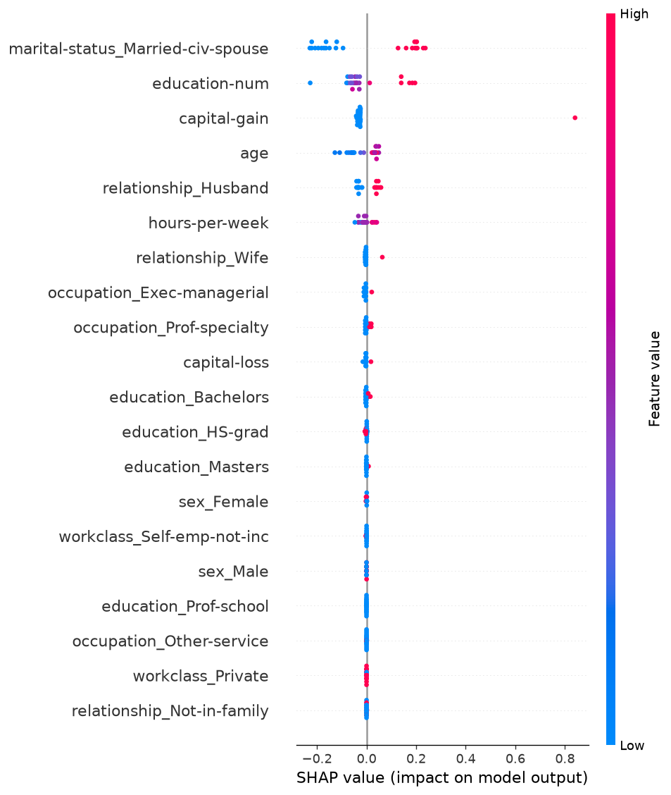
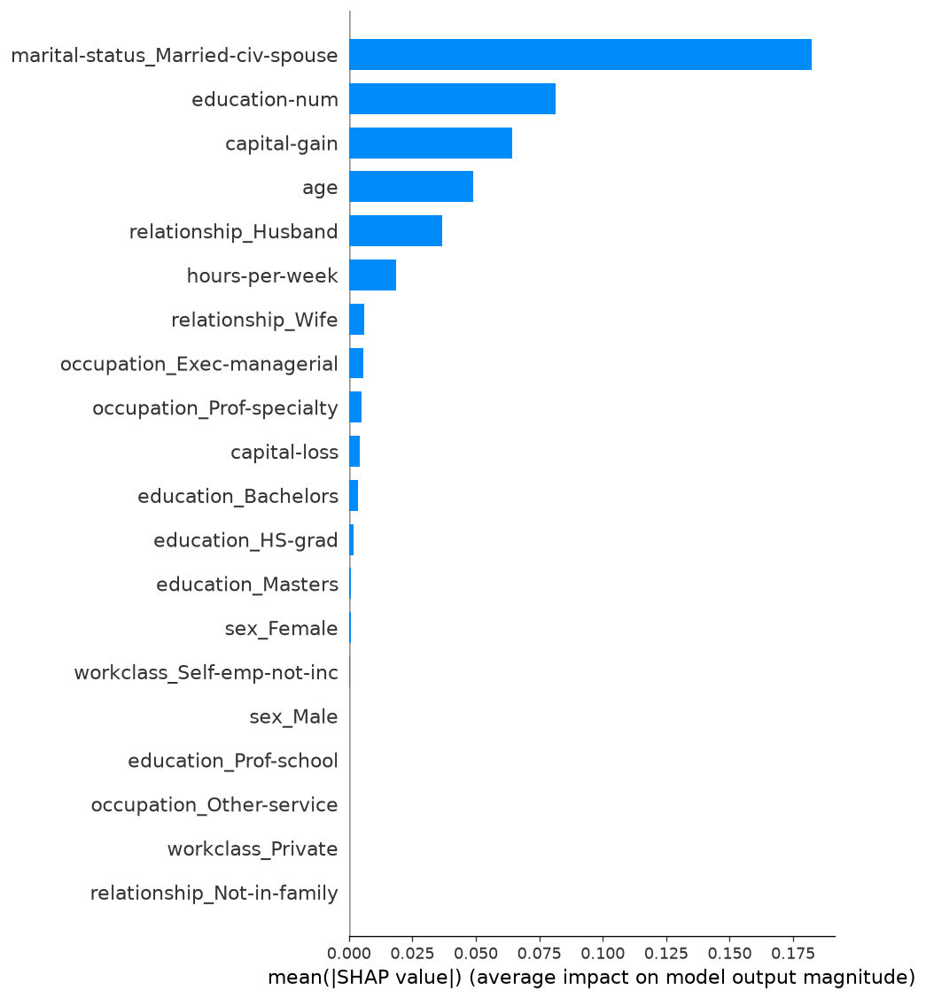
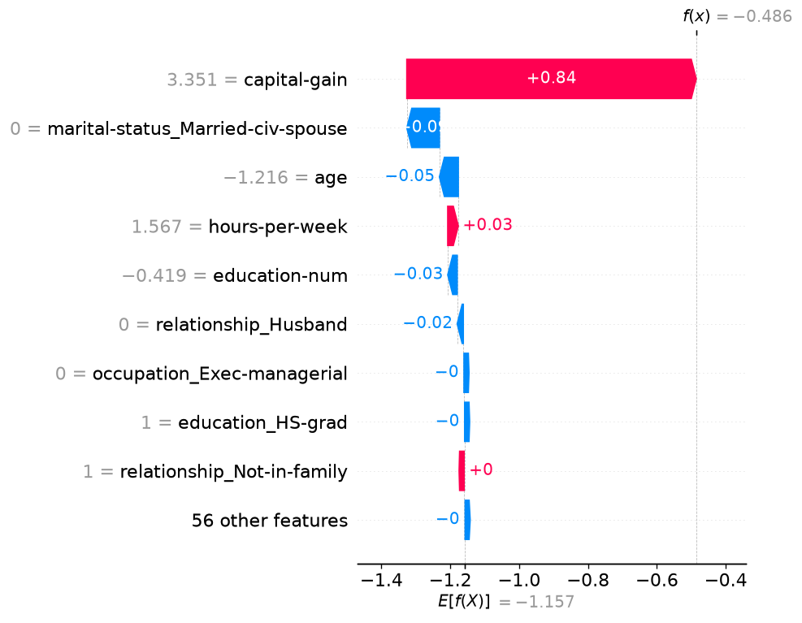

| 排名 | 特征 | 平均 |SHAP| | 解释力占比 | 均值 | 标准差 | 最小值 | 最大值 |
|---|---|---|---|---|---|---|---|
| 1 | marital-status_Married-civ-spouse | 0.1823 | 39.5% | -0.0044 | 0.1861 | -0.2286 | 0.2371 |
| 2 | education-num | 0.0816 | 17.7% | -0.0111 | 0.1002 | -0.2270 | 0.1955 |
| 3 | capital-gain | 0.0642 | 13.9% | 0.0058 | 0.1741 | -0.0417 | 0.8406 |
| 4 | age | 0.0488 | 10.6% | -0.0097 | 0.0546 | -0.1275 | 0.0495 |
| 5 | relationship_Husband | 0.0369 | 8.0% | -0.0006 | 0.0379 | -0.0403 | 0.0584 |
| 6 | hours-per-week | 0.0188 | 4.1% | -0.0056 | 0.0224 | -0.0471 | 0.0413 |
| 7 | relationship_Wife | 0.0059 | 1.3% | -0.0006 | 0.0135 | -0.0063 | 0.0636 |
| 8 | occupation_Exec-managerial | 0.0056 | 1.2% | -0.0039 | 0.0059 | -0.0108 | 0.0209 |
| 9 | occupation_Prof-specialty | 0.0048 | 1.0% | 0.0014 | 0.0071 | -0.0051 | 0.0191 |
| 10 | capital-loss | 0.0044 | 1.0% | -0.0029 | 0.0054 | -0.0149 | 0.0179 |



下表列出 Top-5 特征对预测的总体影响方向。均值 > 0 表示该特征值越高越推动预测向正类（或更高预测值）， 均值 < 0 表示该特征值越高越推动预测向负类（或更低预测值）。
| 特征 | 平均 SHAP 值 | 主导方向 | 影响描述 |
|---|---|---|---|
| marital-status_Married-civ-spouse | -0.0044 | 负向 | 值越大 → 负类概率越高 |
| education-num | -0.0111 | 负向 | 值越大 → 负类概率越高 |
| capital-gain | 0.0058 | 正向 | 值越大 → 正类概率越高 |
| age | -0.0097 | 负向 | 值越大 → 负类概率越高 |
| relationship_Husband | -0.0006 | 双向 | 影响方向因样本而异（均值接近零） |
| 敏感特征 | sex |
|---|---|
| 评估指标 | Demographic Parity, Equalized Odds (TPR / FPR) |
| 差异阈值 | 由 FairnessConfig.dp_threshold / eo_tpr_threshold / eo_fpr_threshold 配置 |
| 子组 | 样本数 | 正类预测率 | 准确率 | TPR（真正率） | FPR（假正率） |
|---|---|---|---|---|---|
| Male | 6510 | 0.00% | 69.63% | 0.00% | 0.00% |
| Female | 3259 | 0.00% | 88.92% | 0.00% | 0.00% |
少于两个分组，或任一分组缺少对应真实类别时，相关差异无法计算；不以零代替。
| 指标 | 差异值 | 是否超阈值 | 说明 |
|---|---|---|---|
| Demographic Parity | 0.0000 | 否 | 各子组正类预测率的最大差异 |
| Equalized Odds (TPR) | 0.0000 | 否 | 各子组真正率的最大差异 |
| Equalized Odds (FPR) | 0.0000 | 否 | 各子组假正率的最大差异 |